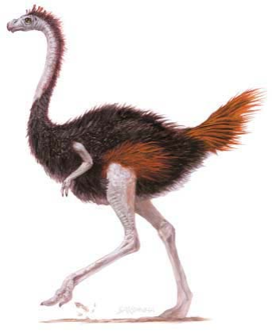

中型魔法兽（跨位面）

| 生命骰： | 2d10+2（13点生命值） |
| 先攻： | +3 |
| 速度： | 50英尺 |
| 防御等级： | 15（+3敏捷，+2天生），接触13，措手不及12 |
| 基本攻击／擒抱： | +2/+3 |
| 攻击： | 喙啄+5近战 |
| 全力攻击： | 喙啄+5近战和踢击-2近战 |
| 伤害： | 喙啄1d3+1/19�C20/×3，踢击1d8 |
| 面宽／触及： | 5英尺/5英尺 |
| 特殊攻击： | 强化重击，尖啸 |
| 特殊能力： | 黑暗视觉60英尺，昏暗视觉，音波抗性10 |
| 豁免： | 强韧+4，反射+6，意志+0 |
| 属性： | 力量13，敏捷16，体质12，智力7，感知11，魅力10 |
| 技能： | 躲藏+4，聆听+2，潜行+4，侦查+5 |
| 专长： | 武器娴熟 |
| 地域： | 任何丘陵/平原（深渊） |
| 组织： | 单独，猎群（4�C10只）或聚落群（11�C40只） |
| 挑战等级： | 1 |
| 宝物： | 标准物品与魔法物品 |
| 阵营： | 通常混乱邪恶 |
| 进化： | 3�C6生命骰（大型） |
| 等级调整： | +1 |
异鸟是一种人类体型大小的无翅鸟类生物，栖息于外层位面荒芜区域（尤其是深渊）。它们以大规模群体行动，智力远超其外表所示。异鸟族群有时会与游牧民族和行商进行贸易。
其外形略似鸵鸟，但黑红相间的羽毛短而带刺。替代翅膀的是一对鳞片状退化人形手臂（承载能力按力量值一半计算）。喙部呈钩状且锋利如刃。
异鸟使用深渊语。
异鸟以猎群形式协同作战：通常分散包围目标，再成对突进形成夹击。
强化重击Augmented Critical（Ex）：异鸟的喙啄在自然攻击骰19�C20时构成重击威胁，成功重击造成三倍伤害。
尖啸（Su）：单只异鸟的尖啸具有超自然响度和震慑力。标准动作发出尖啸时，20英尺内生物需通过强韧豁免（DC12），否则晕眩1轮。若20英尺内至少四只同时尖啸，豁免失败者额外耳聋1d6分钟。八只以上同时尖啸时，豁免失败者还将受到1d10点音波伤害。异鸟免疫自身及同类的尖啸效果。
技能：异鸟在侦查检定上具有+4种族加值。